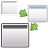
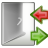
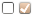
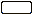

CCSM Effekte
Artikel für fortgeschrittene Anwender
Dieser Artikel erfordert mehr Erfahrung im Umgang mit Linux und ist daher nur für fortgeschrittene Benutzer gedacht.
Dieser Artikel wurde für die folgenden Ubuntu-Versionen getestet:
Ubuntu 16.04 Xenial Xerus
Zum Verständnis dieses Artikels sind folgende Seiten hilfreich:
Der CompizConfig Einstellungs-Manager (abgeleitet aus der Paketbezeichnung nachfolgend mit "CCSM" abgekürzt) bietet umfangreiche Möglichkeiten, das Verhalten auf dem Bildschirm, das Aussehen diverser Komponenten sowie die Eingriffe durch die Tastatur und die Maus einzustellen.
Dieser Abschnitt behandelt die unter dem Thema "Effekte" im Startbildschirm vom CCSM zusammengefassten Einstellungen. Mit diesen Einstellungen kann man eine große Zahl von Effekten realisieren, insbesondere an Fenstern, mit Fenstern, der Arbeitsfläche und dem Desktop allgemein.
Optionen bei Effekte¶
Nachfolgend ist eine Übersicht aller Beschreibungen aufgeführt, die sich mit dem Thema "Effekte" befassen. Durch Anklicken des jeweiligen Icons bzw. des Titels gelangt man zur jeweiligen Detailbeschreibung.
Standard-Optionen¶
| Animation | Fenster ein-/ausblenden | Fensterdekoration | |||
| Unschärfe Fenster | Effekt bei Minimierung | Wackelige Fenster | |||
| Wassereffekt | |||||
Zusatz-Optionen¶
| 3D-Fenster | Animation AddOn | Bewegungsunschärfe | |||
| Bicubic filter | Würfel mit Getriebe | Reflektion und Verformung | |||
|  | Fokusverlauf |  | Login/Logout | Reflektionen | |
| Feuer auf dem Bildschirm | |||||
Diese Zusatz-Optionen sind erst verfügbar nach der Installation des Paketes (Paket nicht mehr verfügbar und obsolet in Xenial):
compiz-fusion-plugins-extra (universe, [1])
 mit apturl
mit apturl
Paketliste zum Kopieren:
sudo apt-get install compiz-fusion-plugins-extra
sudo aptitude install compiz-fusion-plugins-extra
Legende in den Tabellen¶
Die Symbole in den Erläuterungen haben folgende Bedeutung:
 = Auswahl/Wechsel erfolgt durch Anklicken
 = Einstellung der Tasten erfolgt in einer Auswahlbox
= Einstellung der Tasten erfolgt in einer Auswahlbox = Auswahl wird in einem "DropDown" vorgegeben
= Auswahl wird in einem "DropDown" vorgegeben = Einstellung erfolgt über einen "Schieber"
= Einstellung erfolgt über einen "Schieber" = steht für die Eingabe eines zulässigen Textes
Hervorgehobene Werte bei den Einstellungen verweisen auf die bei der Installation vorgegebene Standardeinstellung.
Beschreibungen unter Effekte¶
Die folgenden Plugins für Effekte sind in einer Standardinstallation vorhanden.
Animation¶
Mit diesem Plugin lassen sich eine Vielzahl von Effekten mit den Fenstern auf der aktiven Arbeitsfläche einstellen und verbinden. Die folgende Beschreibung stimmt sinngemäß für alle gelisteten Aufgaben:
beim Öffnen
beim Schließen
beim Minimieren
beim Aufrollen
beim Aktivieren (anderer Fenster)
Innerhalb jeder dieser genannten Gruppen erfolgt
eine feste Zuordnung von einzelnen Effekten zu Fenstertypen
eine Auswahl von Effekten (nach zufälligem Charakter)
Hinweis:
Man kann dabei nicht immer alle Effekte zuordnen. Die jeweils anwendbaren Effekte sind in den Masken ausgewiesen. Detailierte Informationen zu den einzelnen Effekten erhält man im Compiz Wiki  .
.
Im Reiter "Effekt-Einstellungen" kann man dann im Detail bestimmen, wie sich und ob sich die einzelenen Effekte darstellen sollen. Neben der generellen Einstellung kann man jeweils typische Einstellungen für die Effekte vornehmen (siehe nachfolgende Auflistungen):
| Funktion | Typ | Beschreibung |
| "Zufällige Animation aller Ereignisse" | Es wird die eine Einstellung aktiviert, damit alle eingestellten Effekte nach einer zufälligen Auswahl zum Einsatz kommen. | |
| "Zeittakt" | | Hiermit kann ein Zeittakt festgelegt werden, mit der eine Berechnung der einzelnen Schritte der Animation ausgeführt werden soll. Ein zu hoher Wert kann zu Darstellungsfehlern führen. Standardwert = 16 |
Animation Standard-Effekte¶
"Gebogene Zusammenfaltung"
"Ausweichen"
"Traum"
"Gleiten 1" (zum Betrachter hin)
"Gleiten 2" (vom Betrachter weg)
"Horizontales Zusammenfalten"
"Wunderlampe"
"Aufrollen"
"Seitliches Abrollen" (Sidekick)
"Absaugen" (Staubsaugereffekt)
"Wellenbewegung"
"Zoomen"
Animation Add-On-Effekte¶
Die folgenden Effekte werden mit dem Plugin "Animation Add-on" zur Verfügung gestellt. Die spezifischen Einstellungen erfolgen in den Masken von Plugin. Nach der Aktivierung werden diese unter den Standard-Effekten zur Auswahl mit angeboten:
"Flugzeug"
"Teleporter"
"Verbrennen"
"Domino"
"Explodieren"
"Falten"
"Gleiten 3"
"Rasiermesser (Razr)"
"Skewer"
Fenster ein-/ausblenden¶
Hiermit werden die Effekte festgelegt, wie sich ein Fenster beim Einblenden bzw. beim Ausblenden auf der Arbeitsfläche verhalten soll.
| Funktion | Typ | Beschreibung |
| "Ausblendemodus" | | Hiermit wird der Modus zum Ein- bzw. Ausblenden eingestellt. Die Einstellungen sind: "Konstante Geschwindigkeit", "Feste Zeit" |
| "Ausblendgeschwindigkeit" | | Hiermit wird die Geschwindigkeit festgelegt, mit der das Fenster sich ein- bzw. ausblendet. Standardwert = 5,000 |
| "Ausblendungszeit" | | Hiermit wird die Zeit festgelegt, in der ein Fenster auf der Arbeitsfläche erscheint bzw. es von der Arbeitsfläche genommen wird. Standardwert = 100 msek |
| "Fensterauswahl für das Ein-/Ausblenden " | Hier kann man in einer Liste die Fenster bzw. anderen Anzeigen bestimmen, die mit diesem Effekt in Erscheinung treten. | |
| "Visuelle Glocke" | Hiermit wird ein aktives Fenster als visulle Glocke eingesetzt, indem es auf rechner-interne Ereignisse aufmerksam macht. | |
| "Visuelle Glocke im Vollbildmodus" | Hiermit wird ein Fenster als visuelle Glocke eingesetzt, wenn dieses sich im Vollbildmodus befindet, indem es auf rechner-interne Ereignisse aufmerksam macht. | |
| "Dimmen von Fenstern ohne Kontrolle" | Hiermit wird festgelegt, dass Fenster, die nicht mehr vom Fenstermanager kontrolliert werden können, abgeblendet werden sollen. | |
| "Helligkeit" | | Hiermit kann man die Helligkeit einstellen, auf die ein nicht mehr reagierendes Fenster abgedimmt werden soll. |
| "Farbsättigung" | | Hiermit kann man die Farbsättigung einstellen, mit der ein nicht mehr reagierendes Fenster sich darstellen soll. |
Fensterdekoration¶
Diese Plugin sollte immer aktiviert sein, da es ansonten zu fehlerhafter Darstellung und fehlenden Fensterrahmen kommen kann.
| Funktion | Typ | Beschreibung |
| "Schattenradius" | | Gibt die Breite für den Schatten hinter den Fenstern an. Standardwert = 9,0000 |
| "Schatten-Transparenz" | | Gibt die Durchsichtigkeit des Schatten an. der Standardwert = 0,5000 |
| "Schattenversatz X-Richtung" | | Gibt den Versatz für den Schatten hinter den Fenstern nach rechts an. Standardwert = 1,0000 |
| "Schattenversatz Y-Richtung" | | Gibt den Versatz für den Schatten hinter den Fenstern nach unten an. Standardwert = 1,0000 |
| "Kommando" | Hier kann man eine Befehlszeile eingeben, die als alternativer Befehl bei Ausfall eines Dekorations-Programms benutzt werden soll. Standardeintrag ist "/usr/bin/compiz-decorator" | |
Hinweis:Andere Befehle sollte man ausführlich testen, ansonsten kann es vorkommen, dass die Fenster nicht mehr bedienbar sind ! | ||
| "Mipmaps" | Hiermit kann man einstellen, dass für die Fensterdekoration Mipmap-Texturen generiert werden sollen. | |
| "Dekoration für Fenster" | Liste von Fenstern und Notifications, die diese Option benutzen sollen. Standardeintrag = "any" (alle) | |
| "Schatten für Fenster" | Liste von Fenstern und Notifications, die diese Option benutzen sollen. Standardeintrag = "any" (alle) |
Fensterunschärfe¶
Der Einsatz dieses Plugins zum Setzen einer Fensterunschärfe ist stark abhängig von der eingesetzen Grafikkarte und der zur Verfügung stehenden Rechnerleistung. Detailierte Informationen sind unter Blur Windows im Compiz-Wiki zu erhalten.
Wackelige Fenster¶
Mit diesem Plugin wird bein Bewegegen des Fensters, je nach Geschwindigkeit, das Fenster mehr oder weniger verformt. Das Fenster folgt dabei dem Mauszeiger, mit dem das Fenster gegriffen wurde. Mit Aktivierung diese Plugins wird die Option Snapping Windows deaktiviert.
| Funktion | Typ | Beschreibung |
| "Fenster einrasten" | | Hiermit kann man eine Tastenkombination auswählen, mit der man die abgeschaltete Option Snapping Windows wieder einschalten kann. Die Standardeinstellung ist ⇧ |
| "Einrasten invertieren" | Hiermit wird der Einrast-Effekt, der mit obiger Tastenkombination erreicht wird, umgekehrt angewendet. | |
| "Zittern" | Hiermit kann an dem bewegten Fenster ein leichtes Zittern hinzufügen. | |
| "Reibung" | | Hiermit wird dem Fenster ein virtueller Reibungswiderstand zugeordnet, der das Fenster in der Bewegung (in Teilen) verlangsamt erscheinen lässt. Die Standardeinstellung ist 3,0000 |
| "Spring Konstante" | | Hiermit wird ein virtueller Federeffekt eingestellt, der das Überschwingen des Fensters beeinflusst. Die Standardeinstellung ist 8,0000 |
| "Gitterauflösung" | | Der Standardwert = 8 Pixel |
| "Minimale Gittergröße" | | Der Standardwert = 8 Pixel |
| "Effekt zuordnen" | | Es kann der Effekt "Zittern" ausgewählt werden. Die Standardeinstellung ist "Keine" |
| "Effekt fokussieren" | | Es kann der Effekt "Zittern" ausgewählt werden. Die Standardeinstellung ist "Keine" |
| "Focus Windows" | Hier kann man eine Liste der Fenster und Hinweisboxen eingeben, die wackeln sollen, wenn diese einen Focus erhalten. | |
| "Grab Windows" | Hier kann man eine Liste der Fenster und Hinweisboxen eingeben, die wackeln sollen, wenn man diese (mit der Maus) aufgreift. | |
| "Move Windows" | Hier kann man eine Liste der Fenster und Hinweisboxen eingeben, die erst wackeln sollen, wenn diese bewegt werden. | |
| "Effekt maximieren" | Hiermit kann man einstellen, dass das Fenster beim Maximieren (nach dem Erreichen des Vollbildes) noch ein Nachwackeln zeigt. |
Wassereffekt¶
Mit diesem Plugin wird auf dem Bildschirm die Auswirkungen eines Regenschauers nachgebildet.
| Funktion | Typ | Beschreibung |
| "Initiieren" | | Hiermit wird der Effekt einmalig im Bereich des Mauszeigers eingeschaltet. Man kann das zum Suchen der Maus (missbrauchen) benutzen. Die Standardeinstellung ist Strg + Windows . |
Hinweis:Diese Funktion muss unter dem Ubuntu-Unity-Desktop anders eingestellt werden, da unter "Unity" alle Kombinationen mit der Windows -Taste reserviert sind. | ||
| "Regen ein/aus" | | Hiermit wird der Effekt dauerhaft eingeschaltet und nach erneutem Drücken wieder beendet. Die Standardeinstellung ist ⇧ + F9 . |
| "Wischer ein-/ausschalten" | | Hiermit wird ein virtueller Wischer dauerhaft eingeschaltet und nach erneutem Drücken wieder beendet. Es wird damit die Arbeitsfläche kurzzeitig wieder besser sichtbar. Die Standardeinstellung ist ⇧ + F8 . |
| "Versatz-Skalierung" | | Hiermit wird der Abstand der Einschlagstellen der Regentropfen eingestellt. Die Standardeinstellung ist 1,0000 |
| "Regenverzögerung" | | Hiermit wird die Stärke des Regens eingestellt. Ein kleinerer Wert führt zu einem stärkeren Regen (die Regentropfen fallen häufiger) |
| "Titelwelle" | Wenn dieser Effekt aktiviert ist, werden aus der Titelleiste des aktiven Fensters Wellen ausgesandt. Hiermit wird die interne Funktion visueller Alarm nachgebildet, z.B.: wenn man versucht, in einem Editorfenster mit den Richtungstasten über die Arbeitsfläche hinaus zu steuern. |
Zusatz-Plugins zu Effekten¶
3D-Fenster¶
Hiermit wird ein 3D-Effekt bei Drehung des Würfels erreicht, indem die Fenster optisch auf verschiedene Ebenen gehoben werden.
3D-Fenster Optionen¶
| Funktion | Typ | Beschreibung |
| "Betroffene Fenster" | Hier wird in eine Liste der Fenster bzw. Hinweisboxen eingetragen, die diesen Effekt benutzen sollen. | |
| "Minimale Größe des Würfels" | | Hiermit wird eine minimale Größe des Würfels bei einer Drehung vorgegeben. Der Standardwert ist 60 % (als Wert von der normalen Größe) |
| "Fensterabstand" | | Hiermit wird der Abstand der Fenster (Abhebung von der Arbeitsfläche und anderen Fenstern) bei einer Drehung des Würfels eingestellt. Der Standardwert ist 10 % (als Wert von der Würfelgröße) |
| "3D-Modus nur bei.." | ".. bei manueller Rotation mit der Maus": Hiermit wird festgelegt, dass dieser Effekt nur eintreten soll, wenn der Würfel mit der Maus (nicht bei einer Tastenkombination) gedreht wird. |
3D-Fenstertiefe¶
| Funktion | Typ | Beschreibung |
| "Fenstertiefe" | | Hiermit wird die optische Tiefe (Dicke) der Fenster bei Drehung des Würfels eingestellt. Standardwert = 0,3000 |
Zusätzliche Einstellungen ab Natty Narwhal
| Funktion | Typ | Beschreibung |
| "Bevel Corners" | | "Abgeschrägte Ecken": Diese Einstellungen sollen Fehler vermeiden, wenn man Fenster mit abgerundeten Ecken betreibt. Standardwert = 0 Pixel, Einstellungen der einzelnen Ecken siehe am Schluss der Tabelle. |
| "Window Color (Avtive)" | | "Fensterfarbe für die Tiefe, aktives Fenster": Hier kann man in einer Farbauswahlbox die Farbe am Rand des Fensters bestimmen, die bei Drehung des Würfels als Tiefe zu sehen ist. |
| "Window Color (Inavtive)" | | "Fensterfarbe für die Tiefe, inaktives Fenster": Hier kann man in einer Farbauswahlbox die Farbe am Rand des Fensters bestimmen, die bei Drehung des Würfels als Tiefe zu sehen |
| "Bevel Corners" | "Abgerundete Ecken": Nach dem Aufklappen dieser Option mit + können die vier Ecken einzeln eingestellt werden. |
Bewegungsunschärfe¶
Mit dieser Einstellung wird bei einem Verschieben des Fensters dieses je nach Einstellung verwaschen dargestellt. Desgleichen werden Veränderungen/Bewegungen in einem Fenster davon beeinflusst. Diese Option verlangt eine hohe Rechnerleistung bzw. eine gute Grafikkarte.
| Funktion | Typ | Beschreibung |
| "Aktiviere .." | | ".. Bewegungsunschärfe": Mit dieser Tastenkombination wird dieser Effekt zu- bzw. abgeschaltet. Standardeinstellung ist Strg + F12 |
| "Bewegungsunschärfe .." | ".. bei transformiertem Bildschirm": Anmerkung der Autoren: Es konnte bei Aktivierung keine Auswirkung festgestellt werden! | |
| "Modus der Bewegungsunschärfe" | | Man kann den Modus für diese Option auswählen, Einstellungen: "Texturkopie", "Verwendung des OpenGL Accumulation Buffer" |
| "Stärke der .." | | ".. Bewegungsunschärfe": Hiermit kann man die Intensität der Bewegungsunschärfe einstellen. Standardeinstellung = 20,0000 - ein höherer Wert verschleiert die Darstellung bis zur Unkenntlichkeit! |
Bicubic filter¶
Die Einstellung "Bi Cubic" (Doppelter Würfel) ist nur erforderlich, wenn man unter Desktop-Würfel die Option im "Modus für Mehrfachausgabe" sich für "Mehrere Würfel" entschieden hat. Hiermit wird eine Filterung nach dem jeweils aktivem Desktop vorgenommen. Die Aktivierung dieser Option erfordert eine hohe Rechnerleistung bzw. gute Grafikkarte.
Diese Option kann nur aus- bzw. abgewählt werden, es gibt keine weiteren Einstellungen.
Würfel mit Getriebe¶
Mit dieser Einstellung, die nur aus- bzw. abgewählt werden kann, wird im Würfel ein sich rotierendes Getriebe abgebildet, das sich auch noch im Betrachtungswinkel verändert.
Vorausetzungen sind entsprechende Einstellungen unter Transparenter Würfel.
Reflektion und Verformung¶
Der Original-Arbeitstitel lautet: "Cube Reflection and Deformation".
Neben der im Titel angekündigten Effekte sind weitere Aktionen einstellbar.
Verformung Cube Caps¶
Dieser Reiter enthält vier Einstellmasken für:
Maus/Tastenkombination
Verhalten
Bilder/Farbe auf Oberseite bzw. Unterseite bestimmen
Top
Bilder für den oberen Deckel
Bottom
Bilder für den unteren Deckel
Hinweis:
Die Bilder/Images sollten vorzugsweise im Verzeichnis /usr/share/compiz/cubeaddon/images abgelegt werden. Dabei kann dann auch auf die Pfadangabe verzichtet werden.
Verformung Reflektionen¶
| Funktion | Typ | Beschreibung |
| "Aktivieren" | Mit der Aktivierung dieser Funktion werden die nachfolgenden Einstellungen wirksam. | |
| "Bodenfarbe (nah)" | | Hier kann man in einer Farbauswahlbox die Farbe direkt unter dem Würfel/Rotationskörper einstellen. |
| "Bodenfarbe (weiter weg)" | | Hier kann man in einer Farbauswahlbox die Farbe hinter dem Würfel/Rotationskörper einstellen. |
| "Größe des .." | | ".. Bodens für die Reflektion": Hiermit kann man die Größe der Fläche einstellen, die für die Reflektion zur Verfügung gestellt wird. Standardwert = 0,5000 - bei 1,00 reicht die Reflektion fast bis zur Mitte des Desktops. |
| "Intensität" | | Die Intensität der Reflektion (Spiegelung des Würfels/Rotationskörper am Boden) reicht von keine = 0,0000 über den Standardwert = "0,4000" bis voll = 1,0000. |
| "Automatischer Zoom" | Hiermit wird ein Zoomen beim Würfel eingestellt, bei einem Rotationskörper tritt dieser Effekt nicht so offensichtlich auf. | |
| "Automatischer Zoom .." | ".. nur bei manuellem Rotieren": Hiermit wird obige Funktion nur beim Drehen mit der Maus wirksam. | |
| "Reflektions-Modus" | | Hiermit werden für das Zoomen unterschiedliche Modi ausgewählt. Die Einstellungen sind: "Sprunghaft", "Sprunghafte Reflektion", "Entfernung", "Über" |
Würfel Deformation¶
| Funktion | Typ | Beschreibung |
| "Deformation" | | In einem DropDown kann man die Art der Verformung auswählen. Verfügbare Einstellungen sind: "Nichts", "Zylinder", "Kugel" (sphärisch) |
| "Unfold cube deformation" | "Entfalte Würfel-Deformation": Die Reaktion auf diese Einstellung konnte nicht ermittelt werden. | |
| "Deform only on mouse rotate" | "Verforme nur mit der Maus": Hiermit wird die obige Aktion auf eine manuelle Rotation mit der Maus eingegrenzt. | |
| "Deform caps" | "Verforme Kappen": Bei der spärischen Verformung wird mit Aktivierung dieser Option die obere und untere Fläche des Würfels in die Verformung mit einbezogen | |
| "Aspect ratio" | | "Betrachtungswinkel": Hiermit wird die Ansicht auf die Kugel für den Betrachter eingestellt, vom Standardwert 0,0000 = keine zusätzliche Entfernung bis 1,0000 |
Fokusverlauf¶
Hiermit kann man eine Übersicht auf der Arbeitsfläche herbeiführen, indem man bei mehreren Fenstern, anderen Anzeigen und Hinweisboxen deren Zustand hinsichtlich der letzten Aktivierung durch Abdunkeln und/oder Farbentzug kennzeichnet.
| Funktion | Typ | Beschreibung |
| "Fenstertypen" | In einer Liste werden die Fenstertypen festgelegt, die in diesen Verlauf mit einbezogen werden sollen. | |
| "Anzahl der Fenster, .." | | "..die berücksichtigt werden sollen": Hier kann man die Summe der Fenster einstellen, die in die Berechnug einbezogen werden sollen. Jedes Fenster mit einer höheren Zahl (weil ältere Information), wird nicht mehr mit einbezogen und ganz abgeblendet. Dieser Alterungsprozess beinhaltet den Wechsel zwischen den sich in Berechnung befindlichen Fenstern auch untereinander. Der Standardwert = 5 |
| "Vollfokusierte Fenster" | | Hiermit kann man bestimmen, ab welchem Fenster in der Zählung angefangen werden soll, ab der die Fenster abzublenden sind. Der Standardwert = 2 (also mit dem dritten Fenster wird die Ausblendung angefangen). |
Fokusverlauf Aussehen¶
Unter diesem Reiter werden die Parameter für die Abblendung der Fenster festgelegt. Alle Werte haben in der Standardeinstellung (mittels einstellbar) den Wert 100 %.
Sichtbarkeit
des fokusierten Fensters
der unfokusierten Fenster
Helligkeit
des fokusierten Fensters
der unfokusierten Fenster
Farbsättigung
des fokusierten Fensters
der unfokusierten Fenster
Login/Logout¶
Zur Zeit keine Informationen vorhanden.
Reflektionen¶
Mit dieser Option werden hinter einem aktiven Fenster auswählbare Reflektionsmuster erzeugt.
| Funktion | Typ | Beschreibung |
| "Reflektionsbild" | In einer Liste kann man ein Hintergrund für diese Art der Reflektion eingeben bzw. in einer Ordnerauswahlbox ein Bild aussuchen. | |
| "Betroffene Fenster" | In einer Liste kann man die Fenster bestimmen, bei denen die Reflektion auftreten soll. | |
| "Reflektionen für Fenster" | Hiermit aktiviert man die Reflektionen für den Bereich rund um das Fenster. | |
| "Reflektion für Fensterrahmen" | Hiermit aktiviert man die Reflektionen nur für die Rahmen vom Fenster - am besten sichtbar in der Titelzeile. | |
| "Transparenz-Abhängigkeitsschwelle" | | Hiermit kann man einen Schwellwert zur Tranparenz des Hintergrundes einstellen. |
| "Bewegte Reflektionen" | Hiermit kann man das Hintergrundbild (für die Reflektion) in Grenzen sich bewegen lassen. |
Feuer auf dem Bildschirm¶
Zeichnet auf der Arbeitsfläche ein Feuer und dunkelt den Rest ab (Fenster und Arbeitsfläche)
| Funktion | Typ | Beschreibung |
| "Einschalten mit Tasten" | | In einer Auswahlbox kann man eine Tastenkombination einstellen, um ein Feuer im Bereich vom Mauszeiger zu entfachen. |
| "Einschalten mit Mauskombination" | | In einer Auswahlbox kann man eine Maus-Tastenkombination einstellen, um ein Feuer im Bereich vom Mauszeiger zu entfachen. |
| "Ausschalten mit Tasten" | | In einer Auswahlbox kann man eine Tastenkombination einstellen, um das Feuer zu löschen. |
| "Ausschalten mit Mauskombination" | | In einer Auswahlbox kann man eine Maus-Tastenkombination einstellen, um das Feuer zu löschen. |
| "Anzahl der Partikel" | | Hier kann man die Anzahl der Partikel einstellen, die pro Zeiteinheit verbrannt werden. Standardwert = 3000 |
| "Größe der Feuerpartikel" | | Hiermit kann man die Größe der Feuerpartikel einstellen. Dieses hat direkten Einfluss auf die Größe des Feuers ingesamt. Standardwert = 15,0000 |
| "Verlangsamung der Feuerpartikel" | | Hiermit wird die Bewegung der Feuerpartikel verlangsamt. Standardwert = 0,5000 |
| "Lebenszeit der Feuerpartikel" | | Hiermit wird die Lebenszeit der partikel eingestellt. Ein höherer Wert lässt die Partikel höher über die Brandstelle aufsteigen. Standardwert = 0,7000 |
| "Farbe der Feuerpartikel" | | In einer Farbauswahlbox kann man die Farbe für das Feuer fest vorgeben. Standardwert = #FF3305 |
| "Zufällige Feuerfarbe" | Mit Aktivierung ändert sich die Farbe der Feuerpartikel ständig nach einem Zufallsmuster. | |
| "Hintergrundhelligkeit" | | Hiermit kann man die verbleibende Helligkeit rund um das Feuer auf der Arbeitsfläche einstellen. Standardwert = 50 % |
Links¶
Intern¶
Plugins
 - eine Übersicht zu den Compiz-Plugins
- eine Übersicht zu den Compiz-PluginsCCSM Allgemein - Einstellungen unter "Allgemein"
CCSM Barrierefreiheit - Einstellungen für Behinderte optimieren
CCSM Arbeitsfläche - Einstellungen für die Arbeitsflächen und deren Erscheinungsbild
CCSM Sonstiges - Sonstiges Einstellungen
CCSM Bildverarbeitung - Einstellungen zur Bildverarbeitung
CCSM Werkzeuge - Werkzeuge und Hilfsmittel, alles was man braucht
CCSM Fensterverwaltung - Fensterverwaltung, wie man die Fenstern aufleben lässt
CCSM Ohne Kategorie - Ohne Kategorie, Internas zur Fehlersuche
Compiz - ein Composite- und Fenstermanager
Compiz CCSM - das Werkzeug, um Compiz-Plugins einzustellen und nutzbar zu machen
CCSM Benutzung - wie die Plugins mit dem CCSM bearbeitet werden
- Erstellt mit Inyoka
-
 2004 – 2017 ubuntuusers.de • Einige Rechte vorbehalten
2004 – 2017 ubuntuusers.de • Einige Rechte vorbehalten
Lizenz • Kontakt • Datenschutz • Impressum • Serverstatus -
Serverhousing gespendet von